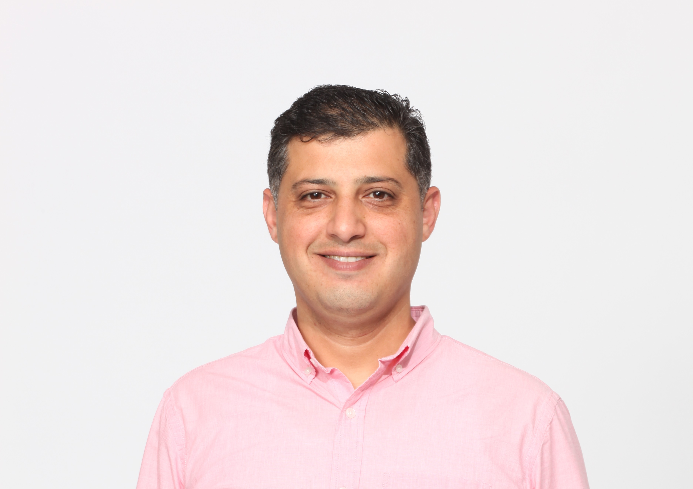

Healthcare systems & patient flow
Improving access, throughput, capacity, and care processes in clinics, emergency departments, and surgical settings.
Educator · Engineer · Researcher
Associate Professor & Lead Faculty
Industrial & Systems Engineering at Western Washington University
I bring engineering, analytics, and continuous improvement together to help people and organizations make complex systems work better. My work spans healthcare, manufacturing, and service operations, with a focus on practical impact, student learning, and community partnership.

Research interests
My applied research combines industrial engineering methods with real operational challenges. I work with students and organizational partners to improve the performance, safety, and resilience of healthcare, manufacturing, and service systems.
Improving access, throughput, capacity, and care processes in clinics, emergency departments, and surgical settings.
Using discrete-event simulation, operations research, and data-informed models to evaluate schedules, staffing, and resources.
Applying Lean, Six Sigma, value-stream mapping, Kaizen, and SMED to reduce delays and create more reliable workflows.
Designing safer, more usable work environments through human-centered workstation, process, and facility design.
Studying production scheduling, inventory, facility layout, and material flow across manufacturing and service operations.
Mentoring undergraduate research with regional partners and helping students share practical results with wider audiences.
Applied projects connect engineering methods to measurable improvements in real systems.
Teaching interests
I aim to make technical ideas clear, welcoming, and useful. My courses connect analytical foundations to hands-on projects, industry practice, and problems that matter to local communities.
Operations research; discrete-event simulation; human factors and ergonomics; statistics for industrial engineering; design of experiments; quality and continuous improvement; and the industrial engineering capstone sequence.
Course links open the related official WWU Industrial & Systems Engineering or Engineering program page.